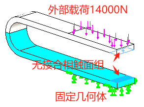
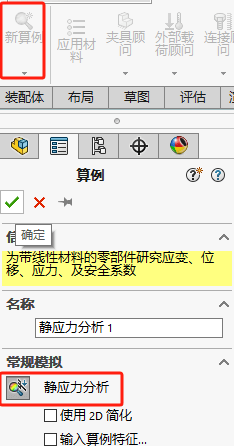
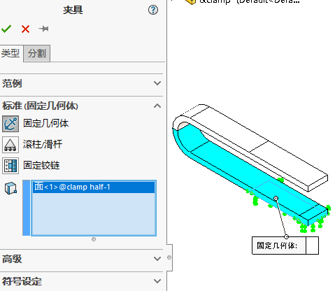
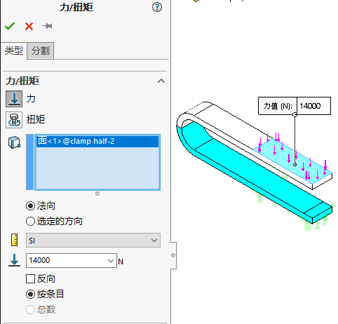
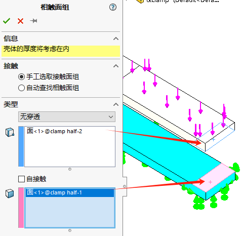
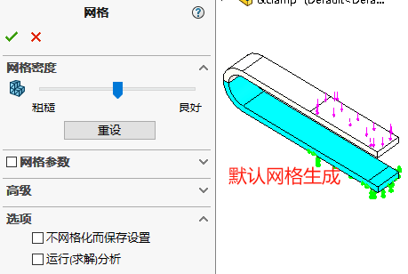
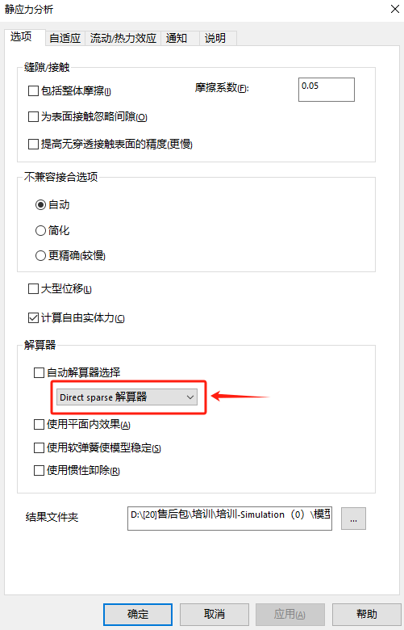
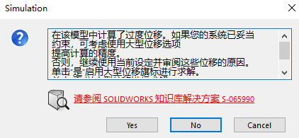
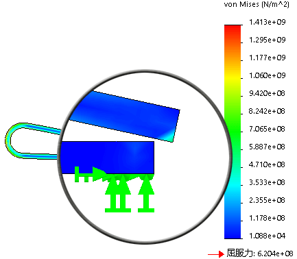

Simulation-大位移分析
大位移问题归入非线性类，当结构受到很大压力时，变形量会增加。因为几何形状变化显著，梁的刚度K2也会明显有差异。
项目描述：夹钳的-臂承受14000N的力并弯曲，它的另一臂固定。
分析目的：分析载荷是否会使两臂接触及卸载后，央钳是否发生永久变形。
静应力分析
新建
新建静应力分析算例
夹具
添加夹具
载荷
添加载荷
连结
添加“无穿透”相触面组
网格
生成默认网格并运行计算结果
运行
算例属性选项，选择Direct sparse解算器。
因为当前载荷下，模型会发生大位移变形。此时软件会提示你是否选择“大位移求解”的选项。
小位移分析
本次计算结果我们选择【否】进行小位移分析。
小位移及大位移分析中的接触结果在小位移分析中，载荷加载的时候接触面的法向并没有改变。这意味着接触面的法向及摩擦力保持恒定在大位移分析中，法向及摩擦力随变形过程而更新。由于在大位移析中接触有显著位移及滑动，所以需使用【节到曲面(无穿透)】的接触选项
大位移分析
本次计算结果我们选择【是】进行大位移分析。
大位移分析
图解显示von Mises应力
从图中可观察到，央钳大部分区域承受的应力都高于材料的屈服强度。因此，当载荷撤销时，夹钳无法恢复到原先的形状。要计算永久变形的夹钳在载荷撤销后的形状及残留应力，必须采用非线性材料模块进行分析。

非线性分析
Simulation静态分析提供了几何非线性结算器(大位移选项)，是一个非常强大的特征，在求解超出几何线性静态问题时尤其如此。但，求解这类问题通常需要正确地设置各种参数及解算器选项。由于静态分析中大位移模块采用预定义的参数，其求解的成功率受到限制。
所有高级非线性解算器的特征及选项都集中在SimulationPremium中的非线性分析中。